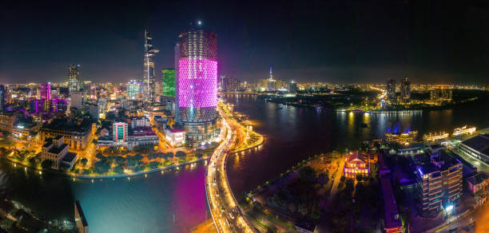
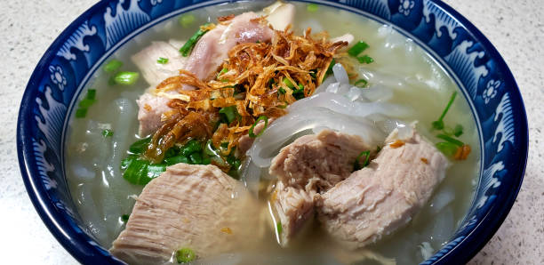
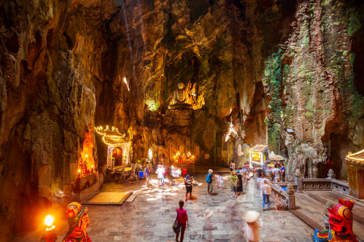

Are you looking for an exciting and unique destination for your next vacation?
Look no further than Vietnam! This vibrant Southeast Asian country is full of culture, history, and adventure. From the bustling cities of Hanoi and Ho Chi Minh City to the beautiful beaches of Nha Trang and Hoi An, there are countless reasons to visit this amazing country. In this article, we will explore five of the best reasons why you should consider traveling to Vietnam. We will discuss the vibrant culture, stunning natural beauty, delicious food, and exciting activities that make Vietnam a must-visit destination. So, get ready to start planning your next trip to Vietnam!
Vietnam is a beautiful country with a rich culture and history. It is a great destination for travelers looking for an exciting and unique experience. From its stunning landscapes to its vibrant cities, there are many reasons why you should consider traveling to Vietnam. In this essay, I will discuss five reasons why you should consider traveling to Vietnam
Incredible Landscapes
Vietnam is home to some of the most stunning landscapes in the world. From the lush green rice paddies of the Mekong Delta to the towering limestone mountains of Halong Bay, there is something for everyone. The country is also home to some of the most beautiful beaches in Southeast Asia, with white sand and crystal clear waters. Whether you’re looking for a relaxing beach vacation or an adventure-filled trek through the countryside, Vietnam has something for everyone.

Delicious Cuisine
Vietnamese cuisine is one of the most delicious and diverse in the world. From the famous pho noodle soup to the delicious banh mi sandwiches, there is something for everyone. The country is also home to some of the best seafood in the world, with fresh fish and shellfish caught daily from the South China Sea. Whether you’re looking for a quick snack or a full-course meal, Vietnam has something for everyone.

Rich Culture and History
Vietnam has a rich culture and history that dates back thousands of years. From the ancient temples of Hue to the bustling markets of Ho Chi Minh City, there is something for everyone. The country is also home to some of the most beautiful pagodas and shrines in Southeast Asia, with intricate carvings and colorful decorations. Whether you’re looking for a cultural experience or a historical journey, Vietnam has something for everyone.

Affordable Prices
Vietnam is one of the most affordable countries in Southeast Asia. From cheap accommodation to affordable transportation, there are plenty of ways to save money while traveling in Vietnam. The country is also home to some of the best street food in the world, with delicious dishes available for less than a dollar. Whether you’re looking for a budget-friendly vacation or an extravagant getaway, Vietnam has something for everyone.
Friendly People
Vietnamese people are some of the friendliest in the world. From the locals in the countryside to the people in the cities, everyone is eager to help and share their culture with visitors. The country is also home to some of the most hospitable people in Southeast Asia, with many locals going out of their way to make sure visitors have a pleasant experience. Whether you’re looking for a friendly conversation or a helping hand, Vietnam has something for everyone.
Conclusion:
Vietnam is an incredible country with something for everyone. From its stunning landscapes to its delicious cuisine, there are many reasons why you should consider traveling to Vietnam. Whether you’re looking for an adventure-filled trek or a relaxing beach vacation, Vietnam has something for everyone. So if you’re looking for an unforgettable experience, consider traveling to Vietnam!